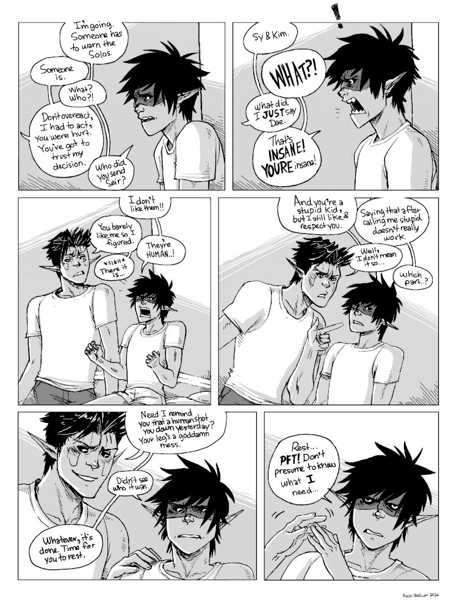
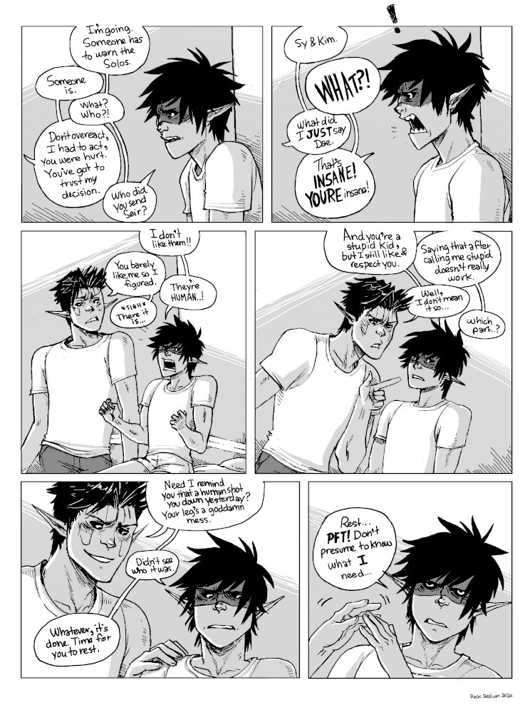
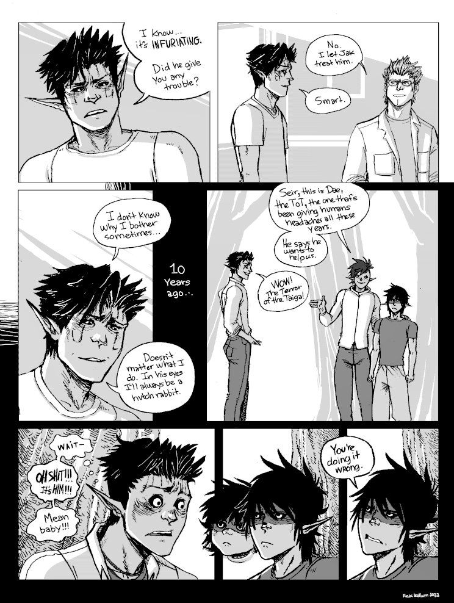
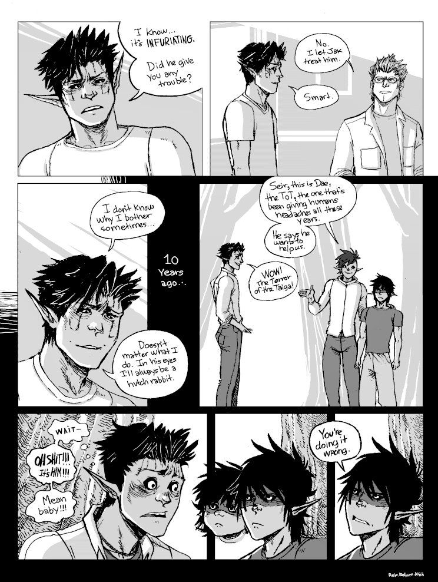
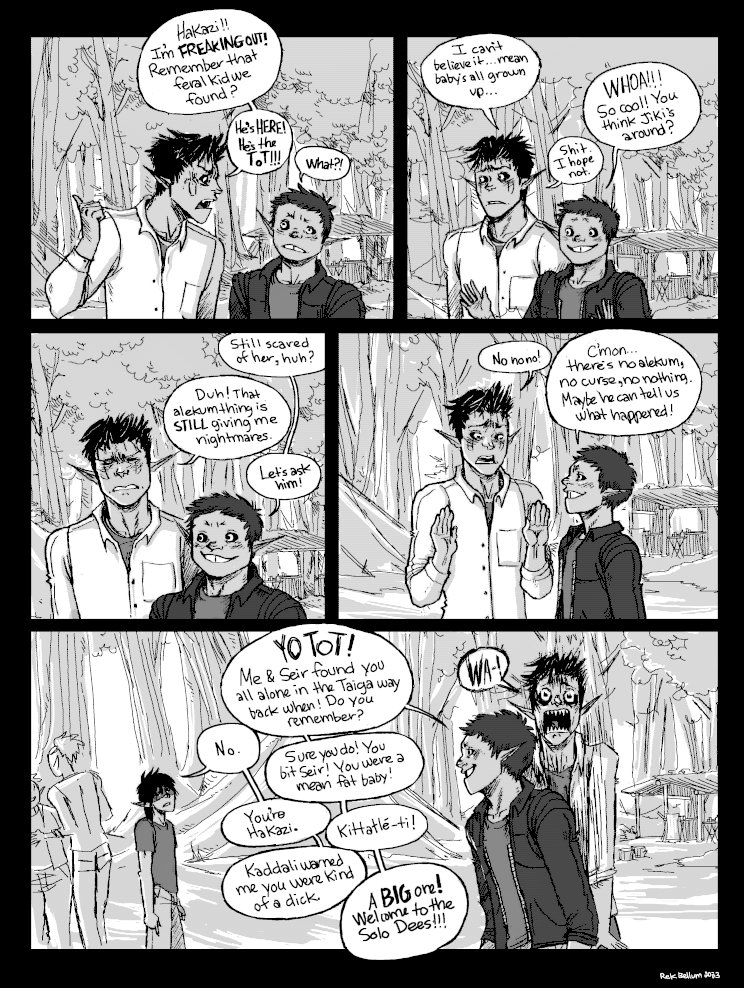
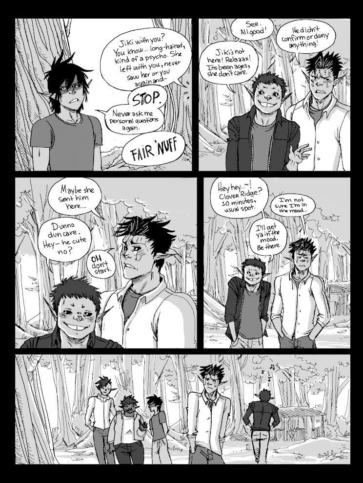
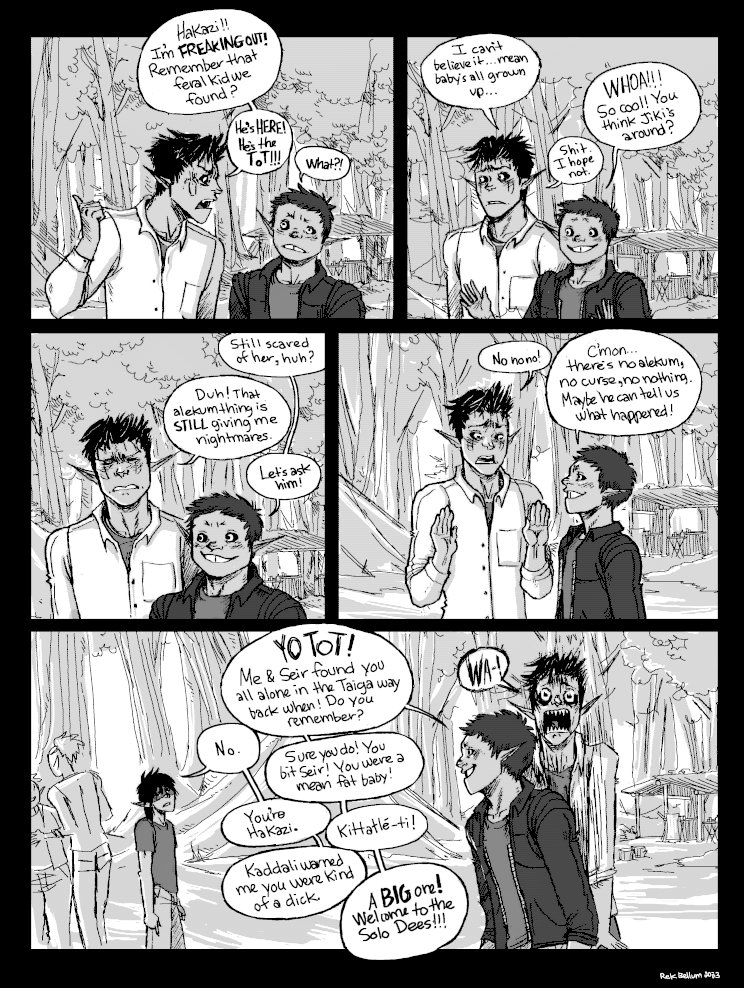
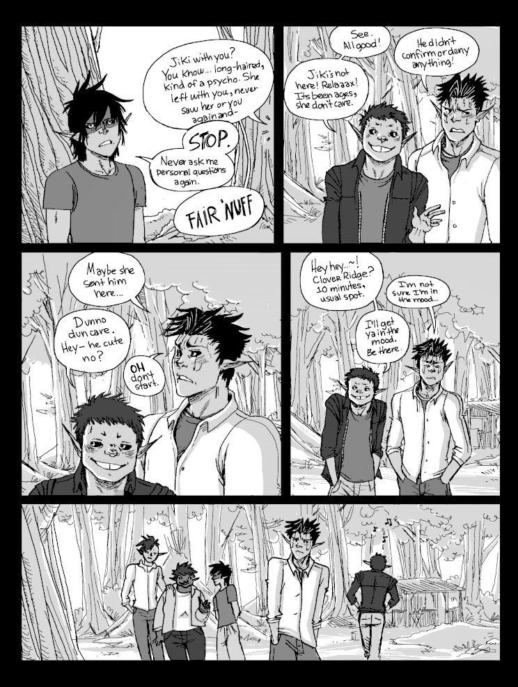

The ToT
Context. This sequence follows the chase, where Dae was shot with an arrow laced with aconite. Dae is on the mend, but impatient. He is staying in Kozi's clinic. Seir, head of the Ars Goetia, and an old friend, comes to see how he's doing. Seir thinks back on the time when he fist met Dae.
Warning. Some swearing.
[Status: complete]
 

 


 



Return to hakum project.